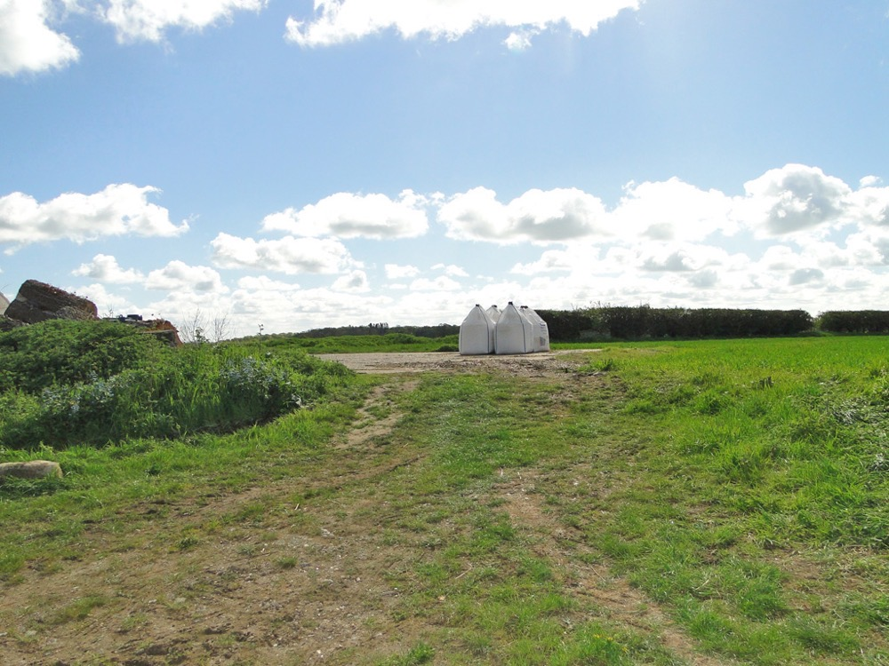
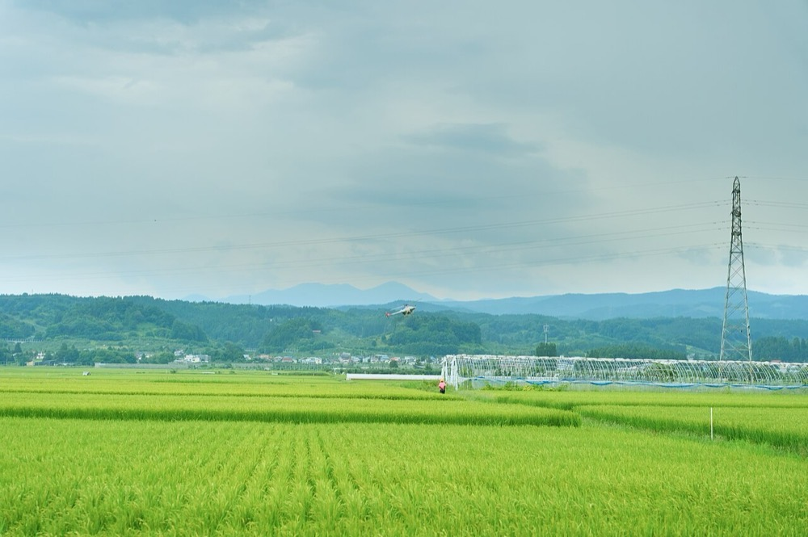

経営面積の大きい農業法人に、肥料と農薬を作付け前の予約注文で販売する。代金は予約時の前払いとし、前払いの額に応じて価格を下げる。メーカーと輸入元から農場へ直送し、銘柄を絞って1銘柄当たりの購入量を大きくする。
農林水産省の2017年の資料では、肥料の国内市場は約4,000億円、農薬の市場規模は約4,000億円である1。農業機械の国内出荷額は2015年度に約2,800億円である1。メーカー出荷額で見た肥料市場は、2023年度に3,285億円、2024年度見込みで3,309億円である3。
推計 農業資材の流通額 ＝ 肥料 ＋ 農薬 ＋ 農業機械 ＝ 約4,000億円 ＋ 約4,000億円 ＋ 約2,800億円 ≒ 1.08兆円
3つの値は時点が異なる。配合飼料は製造量2,308万トン1が分かるが金額を確認できず、含めていない。
推計 系統以外の流通額 ＝ 肥料 約4,000億円 × 0.3 ＋ 農薬 約4,000億円 × 0.4 ＋ 農業機械 約2,800億円 × 0.5 ≒ 4,200億円
系統からの購入割合は肥料約7割、農薬約6割、農業機械約5割である1。
本ページでは世界の農業資材の流通市場の規模を一次情報で確認できなかった。
| 年 | 変化 | 数値 |
|---|---|---|
| 2016年度 | 農業者モニター1,149人への調査 | 農業生産資材の価格に満足していない51.9%。理由は価格が高い74.5%2 |
| 2017年 | 農業競争力強化支援法の施行に向け、農林水産省が資材の業界構造の課題を示した | 肥料の価格は韓国の約1.7〜2.1倍、銘柄は約2万で韓国の約5,700を上回る1 |
| 2017年 | JAの予約注文書の銘柄 | 約半数が1つのJAだけが扱う独自銘柄1 |
| 2022年度 | 肥料価格の高騰 | 肥料市場が大幅に拡大し、2023年度は前年度比77.6%に縮小した3 |
| 2025年9月 | ホームセンターのEC化 | 大手ホームセンターのEC化率が7.0%に上昇し、2028年3月期にEC売上500億円を目標とする4 |
肥料と農薬は、農協以外を主な購入先とする農業者が約3割いる2。2022年の価格高騰で、資材費の差が経営に与える影響は大きくなった3。経営面積の大きい農業法人ほど資材の購入額が大きく、価格と銘柄を自ら選ぶ動機が強い。

| 種類 | 事業者 | 規模 |
|---|---|---|
| 系統 | 全農と各地の農協 | 肥料の主な購入先が農協の農業者は70.1%、農薬は68.2%2 |
| 商系の小売 | 肥料商などの小売店 | 肥料の主な購入先として14.4%、農薬で14.0%2。各社の売上は確認できなかった |
| 資材専門店と量販店 | 資材専門チェーン、ホームセンター | 肥料で8.3%、農薬で10.8%2。農業資材の売上は確認できなかった |
| 肥料メーカー | 上位8社 | 肥料市場の約5割1 |
首位の条件 農業資材の推計1.08兆円で首位は農協の系統であり、肥料の約7割を占める1。系統を上回る販売は10年では届かない。系統以外の推計約4,200億円の中で首位を目指す場合、押さえる点は3つある。①1つの産地で経営面積の大きい農業法人を集中して獲得し、銘柄を絞った大口の購入量を確保すること。②予約注文の前払いで代金を先に受け取り、メーカーへの支払いを前払いの範囲に収めること。③土壌分析と施肥設計を販売に組み合わせ、銘柄の切替を農業者が納得する根拠を示すこと。
水田の大規模経営が多い1つの県に絞る。対象は経営面積50ha以上の農業法人で、品目は水稲向けの基肥と除草剤から始める。

| 用途 | 金額 | 検証すること |
|---|---|---|
| 営業2名と施肥設計1名の人件費 12か月 | 1,800万円 | 農業法人100社に訪問し、何社が予約注文を移すか |
| 土壌分析の外部委託 50圃場 | 300万円 | 分析に基づく銘柄の提案で、切替に同意する割合 |
| メーカーと輸入元との契約、配送の手配 | 400万円 | 直送の配送費が1トン当たり何円か |
| 予約注文の受付画面 | 300万円 | 前払いに応じる農業法人の割合 |
| 初回の仕入れの運転資金 | 800万円 | 前払いを受け取る前に仕入れる量 |
| 予備 | 400万円 | |
| 合計 | 4,000万円 |
| 月 | 計画 |
|---|---|
| 1〜3月目 | 県内の経営面積50ha以上の農業法人の名簿を作成する。肥料メーカー2社と農薬の卸1社と取引契約を結ぶ |
| 4〜6月目 | 30社を訪問し、20圃場で土壌分析を行う。秋作と翌年の作付けに向けた施肥設計を提案する |
| 7〜9月目 | 翌年の作付け向けの予約注文を受け付ける。前払いの割引率を2段階で試す |
| 10〜12月目 | 予約注文の確定額を集計し、メーカーと翌年の購入量で価格を交渉する |
1年目の判定基準は、農業法人30社から翌年分の予約注文を受け、そのうち7割以上が前払いを選ぶことである。
| 段階 | 資金 | 金融機関 | 条件 |
|---|---|---|---|
| 1年目 | 自己資金、新規開業向け融資 | 日本政策金融公庫 | 人件費と初回の仕入れに充てる |
| 2〜4年目 | 季節の運転資金 | 地銀、信用保証協会 | 前払いを選ばない取引先の分と、施肥期の前の仕入れを短期で借りる |
| 3年目以降 | 保管倉庫の賃借、配送車両のリース | リース会社、地銀 | 産地ごとに倉庫を置き、直送できない小口の注文に使う |
| 5年目以降 | 地域の肥料商の買収資金 | 地銀 | 後継者不在の肥料商を買収する。この部分の資金源は型Cになる |
| 年目 | 1 | 2 | 3 | 5 | 7 | 10 |
|---|---|---|---|---|---|---|
| 取引先 農業法人 | 30 | 130 | 400 | 2,000 | 6,000 | 20,000 |
| 売上高 億円 | 0.5 | 2 | 6 | 30 | 90 | 300 |
| 営業利益 億円 | -0.2 | 0 | 0.2 | 1.2 | 4 | 15 |
| 累計投資 億円 | 0.3 | 0.6 | 1.5 | 5 | 12 | 30 |
| 借入残高 億円 | 0 | 0.5 | 1.5 | 6 | 15 | 35 |
| 年目 | 1 | 2 | 3 | 5 | 7 | 10 |
|---|---|---|---|---|---|---|
| 取引先 農業法人 | 20 | 55 | 130 | 530 | 1,200 | 2,700 |
| 売上高 億円 | 0.3 | 0.8 | 2 | 8 | 18 | 40 |
| 営業利益 億円 | -0.3 | -0.2 | 0 | 0.2 | 0.5 | 1.2 |
| 累計投資 億円 | 0.3 | 0.4 | 0.7 | 1.5 | 3 | 5 |
| 借入残高 億円 | 0 | 0.2 | 0.5 | 1.5 | 3 | 5 |
前提
楽観の10年目は売上高300億円で、目安の1,000億円に届かない。肥料と農薬の推計8,000億円の約3.8%である。保守では売上高40億円に留まる。
農業資材の推計1.08兆円で、農協の系統は肥料の約7割、農薬の約6割を占める1。楽観の300億円は全体の約2.8%であり、10年でシェア1位には届かない。
系統以外の推計約4,200億円に限ると、楽観の300億円は約7%である。商系の小売店と資材専門店の各社の売上は確認できず、この区分で首位になるかは判断できない。ただし系統以外という区分は、市場の首位から系統を除いて定義したものであり、日本一の定義を満たすとはいえない。
停止する位置は3つある。1つ目は1〜2年目で、農業法人が農協との取引関係を理由に予約注文を移さない場合である。2つ目は3年目前後で、メーカーが系統との関係を理由に直送の条件を厳しくする場合である。3つ目は5年目以降で、取引先1社当たりの購入額が小さく、営業の費用が売上の伸びを上回る場合である。
肥料と農薬の流通は各国の登録制度の下にあり、日本で登録した銘柄をそのまま海外で販売することはできない。
| 順 | 国 | 理由 |
|---|---|---|
| 1 | ベトナム、タイ | 日系の農業法人と食品会社の契約農場がある。現地の流通構造と登録制度は確認していない |
グローバルなインフラになる見込みは低い。
| # | 基準 | 判定 | 根拠 |
|---|---|---|---|
| 1 | 50年、魂を燃やし続けられるか | 創業者が判定 | |
| 2 | 10年以内に、国内市場規模1,000億円以上の市場でシェア1位になれるか | × | 農協の系統が肥料の約7割を占め、楽観の300億円は推計市場の約2.8%に留まる |
| 3 | 4,000万円で始められ、融資で伸ばせるか | ○ | 在庫を持たない直送と前払いで始められ、季節の運転資金は地銀と公庫で調達できる |
| 4 | グローバルなインフラになり得るか | × | 肥料と農薬は各国の登録制度の下にあり、国内の流通網を海外に移せない |
| 5 | 営業力が最初の売上に直接結びつくか | ○ | 農業法人への訪問と施肥設計の提案で予約注文が決まる。ただし相手は大企業ではなく農業法人である |
| 6 | 同じビジョンを共有する仲間を誘える事業か | 創業者が判定 | |
| 7 | 本業が早く現金を生み、返済と出資の原資になるか | △ | 前払いで現金は先に入るが、売上は年300億円規模に留まり、出資に充てる余剰は小さい |
| 8 | 投資先を束ねる群の中核になれるか | ○ | 農業法人との取引を共通の顧客として、肥料商・防除・農産物の買取の会社を束ねられる |
| 9 | 成長の資金源がA・B・Cのどれに当たるか | A | 予約注文の前払いで代金を受け取ってから仕入れる |
1. 農協との関係による取引の制約 農業法人は資材の購入に加え、農産物の販売と融資でも農協と取引する。資材だけを移すと他の取引に影響すると考え、移さない可能性がある。対策は農協と取引を続けたまま、一部の銘柄だけを移せる小口の予約から始めることである。農協との関係そのものは潰せない。
2. 仕入価格で系統に劣る 肥料の上位8社で市場の約5割を占める1。新規の流通業者は系統より高い価格で仕入れる。対策は銘柄を絞って1銘柄当たりの購入量を大きくし、輸入の肥料原料を使う配合の銘柄を扱うことである。
3. 肥料価格の変動 肥料市場は2022年度に大幅に拡大し、2023年度に前年度比77.6%に縮小した3。前払いで価格を固定した後に仕入価格が上がると損失になる。対策は予約時にメーカーとの仕入価格も固定し、固定できない量は前払いの対象から外すことである。
4. 市場の縮小 肥料市場は約4,000億円で1、農業者の減少とともに縮小しうる。対策は経営面積が増えている農業法人に販売を集中することである。市場全体の縮小そのものは潰せない。